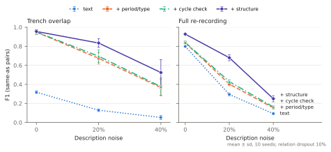

harris-mcp
Harris matrices as structured context for language models: a Model Context Protocol server that loads stratigraphy from the formats archaeologists use, lets a model query it as a graph, and records every interpretive edit on a changelog a person can audit.
§1 · The split
Graph work happens on the server, interpretation on the model, and every edit lands on a changelog.
- Server
- Parsing, validation, ordering, candidate matching and consistency checks. Deterministic and tested.
- Model
- Proposes phasings and correspondences from dense, structured reads rather than from a screenshot of the diagram.
- Person
- Reads the changelog, where every edit carries a note and an author, then keeps, diffs or reverts it.
§2 · Quick start
Use the public instance
Any MCP client that speaks SSE can connect. With Claude Code:
claude mcp add --transport sse harris \
https://harris.openhistorymap.org/mcp/sseThe public instance has no authentication and keeps matrices in memory. Do not load unpublished project data there; run your own.
Run your own
docker build -t harris-mcp .
docker run --rm -p 8000:8000 -v "$PWD/data:/data:ro" harris-mcp
# MCP endpoint: http://localhost:8000/mcp/sse health: GET /A first session
- Open or upload a matrix
open_matrix("/data/fig12")opens a file on the server;upload_matrix(files={"site.hmcx": …}, encoding="base64")sends your own. Either returns a handle, its size, depth and a validation report; an upload also returns the inferred phase order and any anomalies. - Read it densely
describe_context(id, "15")returns the unit, its neighbours above and below, its phase and any links to other records. - Edit with a reason
assign_phase(id, "9", "Phase II", note="C14 LAB-1 fits the lower phase")lands onhistory. - Save
save_matrix(id, "fig12.hmdp.json")keeps the changelog with the matrix.
§3 · Formats
HMDP, an open JSON package defined here, is the pivot: every adapter reads into it and writes out of it.
| Format | Read | Write | Notes |
|---|---|---|---|
HMDP .json | yes | yes | Canonical and lossless, including the changelog |
| CSV, XLSX | yes | yes | contexts and relations tables, or an above/below edge list |
| hm tables (T. S. Dye) | yes | no | Frictionless datapackage.json or an hm .ini project, a folder or a .zip |
| HMCX (Harris Matrix Composer) | yes | no | GraphML inside a zip; phase and period groups become attributes |
| HMC CSV export | yes | no | Semicolon file starting HEADER;, Latin-1 tolerated |
Every relation verb is canonicalised: above, below, cuts and fills become edges of a directed acyclic graph from upper to lower unit; equal and contemporary join a union-find class. The original verb stays on the relation.
§4 · Tool reference
Reads return interpretively useful chunks rather than one attribute per call; every write is recorded on the matrix's changelog with a note and an author. The list below is generated from the server by docs/gen_reference.py.
Load and save 6
- open_matrix
- Load a Harris matrix file on the server and return its handle.
- upload_matrix
- Upload a matrix by content, open it, and return a first analysis.
- open_corpus
- Load several matrix files at once.
- close_matrix
- Close an open matrix and free it from the registry.
- list_open_matrices
- Summaries of every open matrix: id, name, size, depth.
- save_matrix
- Write a matrix to
path(format from the extension, orfmt).
Read units 4
- get_context
- One context (unit) with all its fields and attributes.
- list_contexts
- Contexts filtered by phase, period, type, group or geometry.
- count_contexts
- Number of contexts per phase, period, type or group.
- search_contexts
- Substring (case-insensitive) match across id, description, and attrs.
Read relations 7
- neighbors
- Units directly above, below or contemporary with
ctx, up todepthsteps. - ancestors
- All units stratigraphically earlier than
ctx(transitive): below it. - descendants
- All units stratigraphically later than
ctx(transitive): above it. - relation
- Return the stratigraphic relationship between
aandb. - path
- Shortest stratigraphic path from
atob, or null if unordered. - between
- Units strictly between two contexts on the partial order.
- contemporaries
- Units recorded as the same as, or contemporary with,
ctx.
Whole matrix 11
- topological_layers
- The Harris layout: contexts grouped by topological generation, earliest first.
- phases
- Every phase and its member contexts.
- phase_sequence
- Phase order implied by the stratigraphy, earliest first.
- periods
- Every period and its member contexts.
- phase_contexts
- Contexts of one phase, in stratigraphic order (latest first).
- validate
- Structural diagnostics: cycles, dangling references, redundant edges, orphans.
- summary
- Size, depth and changelog length of an open matrix.
- anomalies
- Phase assignments that violate the stratigraphic partial order.
- describe_context
- High-density read: context + neighborhood + phase + correspondences.
- describe_phase
- High-density read of a phase: members, units bordering it above and below, anomalies.
- boundary_contexts
- Contexts in
phasethat touch units outside the phase.
Edit (changelogged) 8
- add_context
- Add a context.
- update_context
- Patch fields of a context.
- delete_context
- Delete a context and its relations.
- add_relation
- Add a relation (above, below, cuts, fills, equal, contemporary, ...).
- remove_relation
- Remove a relation between
aandb(optionally only ofkind). - assign_phase
- Set the phase of a context.
- mark_contemporary
- Record two contexts as contemporary.
- attach_note
- Append a free-form interpretive note to a context's
attrs.noteslist.
Provenance 3
- history
- The changelog of a matrix, oldest first: op, arguments, note, author, time.
- revert
- Mark a changelog entry as reverted and undo its effect.
- diff
- Return the changelog slice between two entry ids (inclusive).
Cross-document 8
- query_corpus
- Search across every open matrix.
- cross_reference
- Suggest candidate matches between two matrices, best first.
- propose_reconciliation
- Propose which units of
matrix_aandmatrix_bare the same unit. - assert_correspondence
- Record a cross-document correspondence — the LLM's interpretive conclusion.
- check_correspondences
- Merge matrices through their
same_ascorrespondences and report stratigraphic contradictions: groups of units that end up both above and below one another, with the correspondences involved. - correspondences
- Asserted cross-document correspondences, optionally for one matrix or context.
- compare_phases
- Phases shared by two matrices and those found in only one, with sizes.
- compare_periods
- Periods shared by two matrices and those found in only one.
Output 4
- render
- Render the matrix.
- subgraph
- Local stratigraphy around
roots, as an HMDP-shaped subset. - export_geojson
- FeatureCollection of contexts that carry geometry.
- link_ohm_feature
- Record a cross-reference from a stratigraphic context to an Open History Map feature id.
Resources 7
- harris://corpus/correspondences
- harris://matrices
- harris://matrix/{matrix_id}/context/{ctx}
- harris://matrix/{matrix_id}/context/{ctx}/describe
- harris://matrix/{matrix_id}/diagnostics
- harris://matrix/{matrix_id}/layers
- harris://matrix/{matrix_id}/summary
§5 · Reconciling units across records
When two teams record the same deposits, which of their units are the same unit? propose_reconciliation answers in three layers and writes nothing:
- Candidates
Description similarity, compared only between units of the same period and type.
- Structural agreement
A match scores higher when its matched neighbours sit on the same side, above or below; the matching is refined over a few rounds.
- Cycle refusal
A match whose merge would put a unit both above and below another is rejected and listed.
The model or a person then records conclusions with assert_correspondence, which reports any contradiction it introduces; check_correspondences audits the whole set.
Evaluation
A simulation takes Cessford's Çatalhöyük Buildings 1 and 5 matrix (705 units, 852 relations) as ground truth. Two simulated teams record overlapping parts of it with their own numbering, noisy descriptions, missed relations and split or merged units. Four reconcilers, a cumulative ablation of the tool, are scored against the truth, all through the MCP interface.


| Overlap | Noise | Dropout | text | + period/type | + cycle check | + structure |
|---|---|---|---|---|---|---|
| trench | 0% | 10% | 0.32 ± 0.02530 in cycles | 0.95 ± 0.021 in cycles | 0.95 ± 0.020 in cycles | 0.96 ± 0.020 in cycles |
| trench | 20% | 10% | 0.13 ± 0.01579 in cycles | 0.67 ± 0.0633 in cycles | 0.70 ± 0.070 in cycles | 0.83 ± 0.050 in cycles |
| trench | 40% | 10% | 0.05 ± 0.02591 in cycles | 0.37 ± 0.0968 in cycles | 0.38 ± 0.090 in cycles | 0.52 ± 0.140 in cycles |
| trench | 40% | 30% | 0.05 ± 0.02230 in cycles | 0.37 ± 0.0924 in cycles | 0.37 ± 0.090 in cycles | 0.42 ± 0.100 in cycles |
| full | 0% | 10% | 0.80 ± 0.011,028 in cycles | 0.84 ± 0.01850 in cycles | 0.84 ± 0.020 in cycles | 0.93 ± 0.010 in cycles |
| full | 20% | 10% | 0.29 ± 0.021,287 in cycles | 0.40 ± 0.021,202 in cycles | 0.43 ± 0.020 in cycles | 0.68 ± 0.030 in cycles |
| full | 40% | 10% | 0.09 ± 0.011,317 in cycles | 0.15 ± 0.011,273 in cycles | 0.16 ± 0.020 in cycles | 0.25 ± 0.030 in cycles |
| full | 40% | 30% | 0.09 ± 0.01998 in cycles | 0.15 ± 0.01910 in cycles | 0.16 ± 0.010 in cycles | 0.22 ± 0.030 in cycles |
F1, mean ± sd over seeds; below it, units caught in a stratigraphic contradiction after merging. Best F1 per row in bold.
Descriptions are synthetic and both teams share period names, which flatters the period filter. Design, caveats and reproduction steps are in sim/README.md; the raw data in sim/results/.
§6 · Datasets used
| Dataset | Source | Licence |
|---|---|---|
| Harris, fig. 12 | E. C. Harris, as packaged by T. S. Dye | see source |
| Çatalhöyük East Mound, Buildings 1 and 5 | Matrix by C. Cessford, via T. S. Dye's hm examples | GPL-3.0 |
| Ulm-Eggingen | E. Rosenstock, Linear Pottery and Harris (2022), doi:10.5281/zenodo.5534232 | CC BY 4.0 |